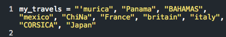
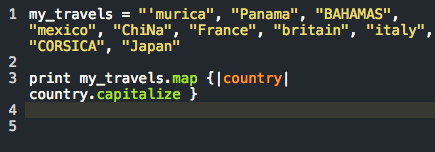
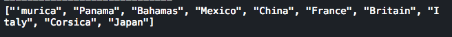

Hello world!
I don't think I can manage a single blog post without a silly pun. Ever. Anyway, I'm a huge fan of travel and maps. The more I travel, the more I understand geography better and, more importantly, humans. None of this, unfortuantely, helped me in my comprehension of map when it came to Ruby this week.
map is one of those things that my friends often offer as part of a solution to any of my exercises when I'm stuck and asking for help. Well, the time finally came for us to learn them so I couldn't use "we haven't covered that yet, so I shouldn't use it" as an excuse any longer. So, in an effort to solidify my own understanding, I would like to present to you: map
map
map is a great tool to use for arrays (essentially a list). In this example, since we're talking about maps, I'm going to create an array of my travels.
It looks like that in my hurry to write everything down I wasn't much of a stickler in terms of capitalization. And, despite this, I happen to be botherd by poor or lacking capitals, so this needs fixing and map is just the guy for the job.
As you'll see above, I used print so I could see what is output. Next, we have my_travels.map, which is calling map to be applied to my list of countries. I defined them in the variable my_travels. In the curly brackets, I define another variable within the pipes (||). I could have called it ketchup if I wanted, but country will do just fine as it shows us what map is looking at: each of the countries I listed. Finally, like an ignorant husband, you have to be undeniably explicit in what you need accomplished, so I list my new variable (which the program will read as each of the countries individuall as it runs through all of them) with a call to capitalize them as it processes through. In the end, we get a nice new array:
So, there you have it. That's map. It takes an array, formats it however you want, and returns it as another array that is uniquely its own.
If, for any reason, you feel like you still need more map in your life, I highly recommend one of my favorite sub-Reddits, Map Porn.